画面
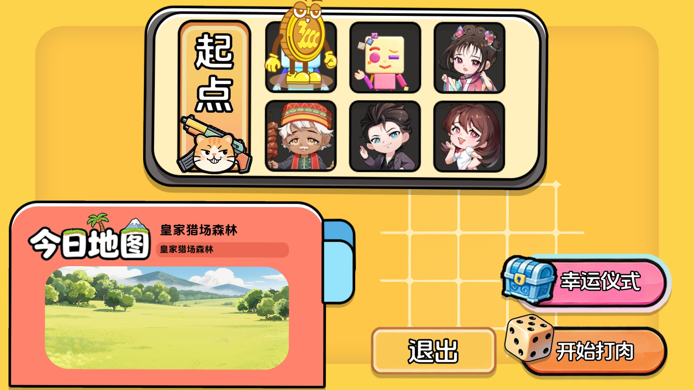
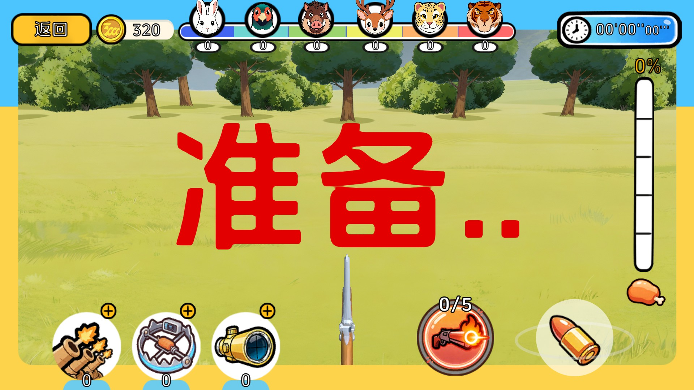
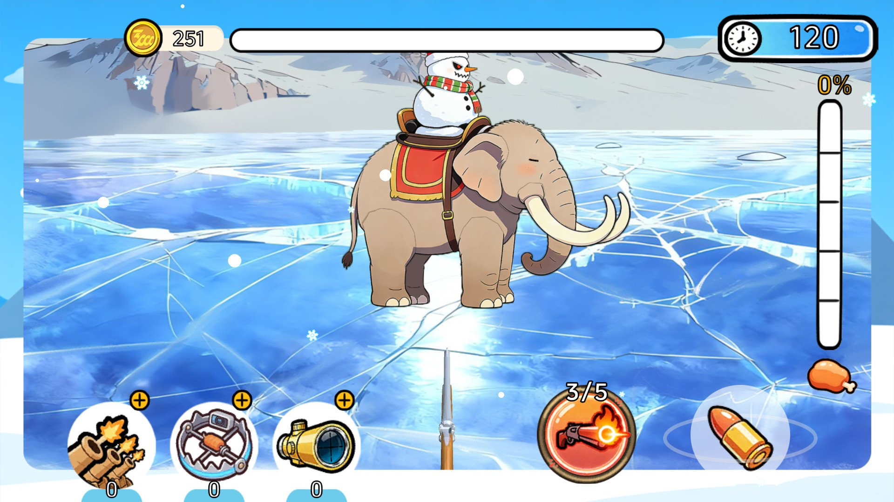
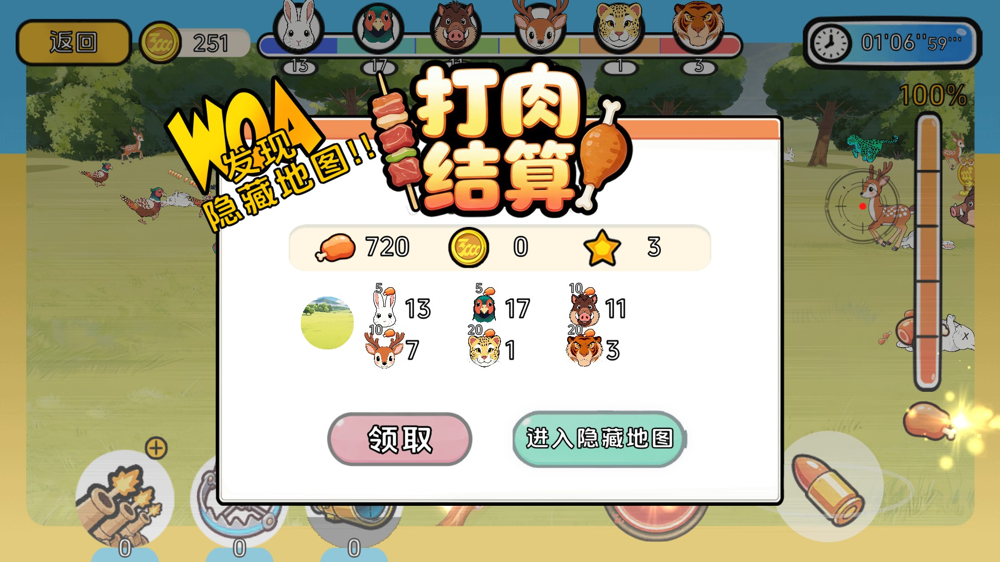
玩法
单局流程
flowchart LR
prepare[准备] --> main[主地图]
main --> full{肉度刻度满}
full -->|这局有隐藏地图| hidden[隐藏地图]
full -->|没有| settle[结算]
hidden --> hiddenSettle[隐藏图结算]
settle --> prepare
hiddenSettle --> prepare
进入主地图时按概率决定这局带不带隐藏地图。肉度没满就留在主地图。
准备
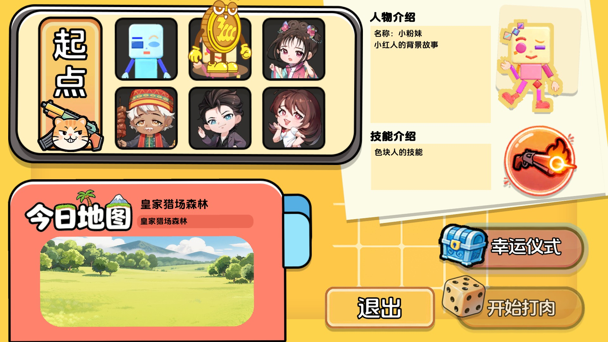
随机抽一张主地图，显示名称和说明。三千盘金币人站在角色格上。点开始后掷骰走格，停在哪格就是本局角色，并带上该角色绑定的技能。界面会写出角色名、背景故事和技能说明。也可以先开幸运仪式，把抽到的增益带进这一局。
主地图
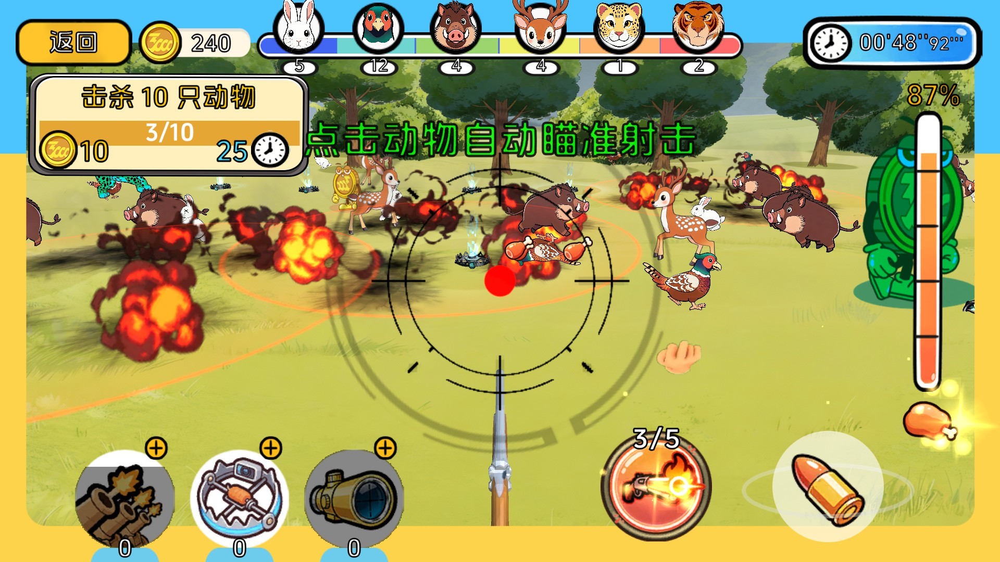
加载森林场景。开场倒计时 8 秒，结束后才能操作，同时播放这张地图的音乐。计时是已经过了多久，到点不会结束这局。
动物按这张地图的物种配置生成。打死之后掉落食物，光效飞到界面对应的位置才入账。肉度涨满一格会提示进度；全部涨满后再倒计时 10 秒，然后结算。如果这局带了隐藏地图，会先弹出进入隐藏地图的提示。
返回按钮会先存档，再回到准备。
隐藏地图
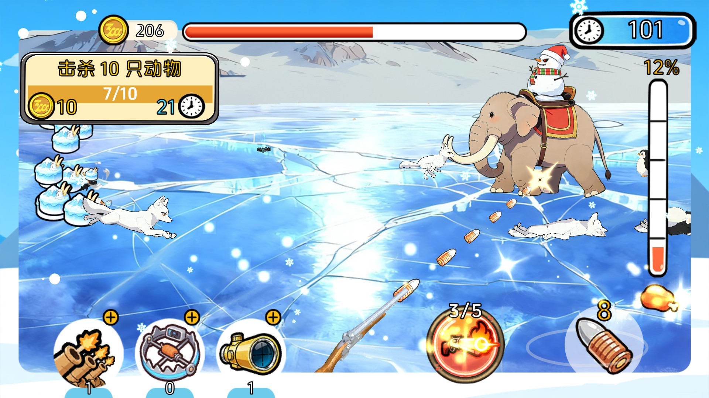
加载雪山场景。出场演出结束后 Boss 才开始移动和受击，这时才能操作。倒计时走完停在 0，不会因此结束这局。Boss 倒下后清掉其他还活着的动物；场上没有其余尸体时结算，同时放慢动作。
| 主地图 | 隐藏地图 | |
|---|---|---|
| 场景 | 森林 | 雪山 |
| 时间 | 已用时间 | 倒计时 |
| 动物计数 | 有 | 无 |
| Boss 血条 | 无 | 有 |
| 返回准备 | 有 | 无 |
| 肉条、道具、子弹、摇杆、技能 | 有 | 有 |
结算
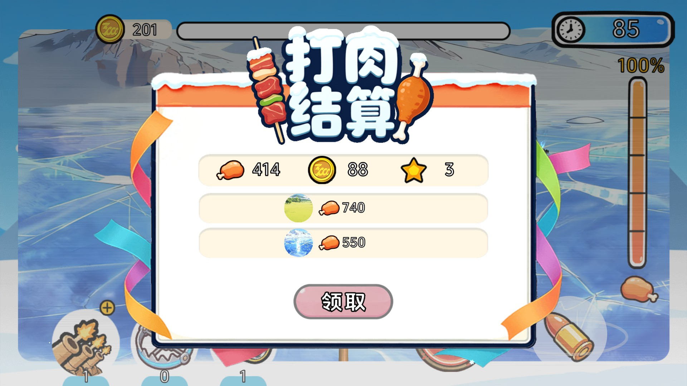
普通结算用这一张地图上的肉。隐藏图结算把各张图的肉加在一起。肉按汇率换成金币。数字走完才能领取。领取后存档，回到准备页。
角色
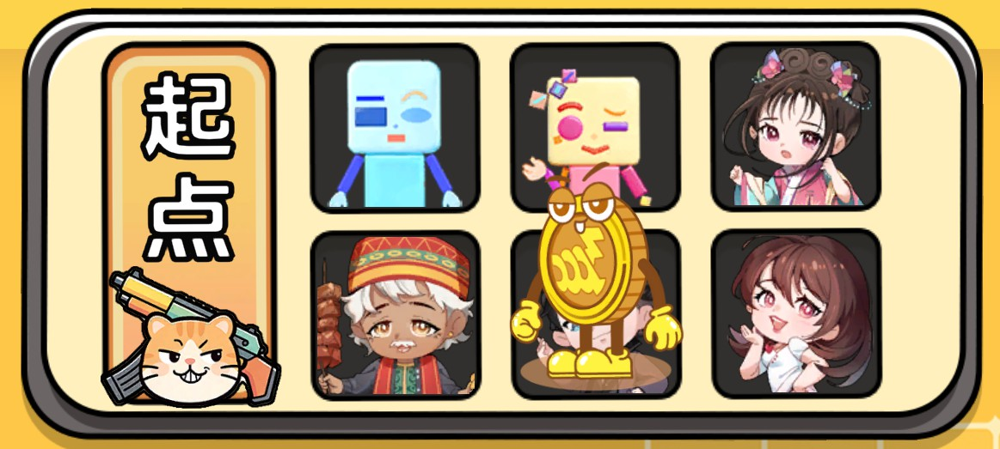
准备页写出角色名和背景故事。角色是小蓝人、小红人、格格、大美丽、金状元、亚克东。
掉落
| 掉落 | 金光粒子飞到哪 | 然后 |
|---|---|---|
| 肉 | 肉条 | 增加肉度 |
| 能量 | 技能 | 增加能量 |
| 子弹 | 子弹图标 | 换成一条特殊子弹 |
| 金币 | 金币图标 | 增加持有的金币 |
操作与子弹
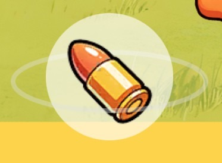
手指或鼠标拖动摇杆 UI 拨方向，按住即射击；手指或鼠标在屏幕上滑动，按住也能射击；道具「指哪打哪」会改成点选一只动物，再按提前量（预判）转向射击。两条路都由玩家武器开火。
爆炸弹打中后，落点半径内的动物受到同一次伤害。普通弹、高伤弹、高速弹都只扣打中的那一只。特殊子弹持续时间结束后，回到普通子弹。
道具
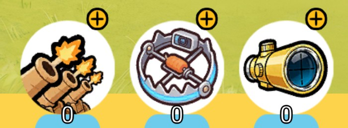
局内点加号会暂停，同时打开购买层。价格用金币支付。每种道具同时只能用一个，用掉就扣 1 个。
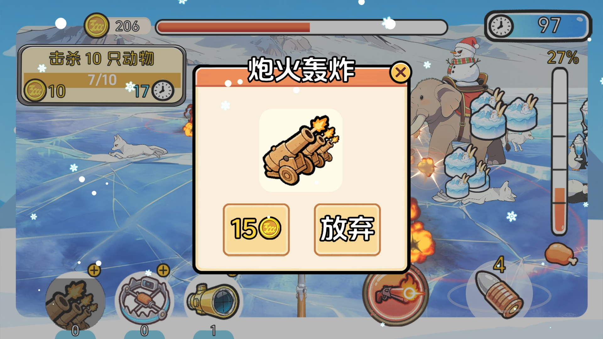
| 道具 | 效果 |
|---|---|
| 炮火轰炸 | 在场上落几个点，按间隔伤害动物 |
| 指哪打哪 | 改成点选动物后再射击 |
| 智能诱捕陷阱 | 分批放夹子，把非 Boss 引过来并伤害它 |
技能与能量
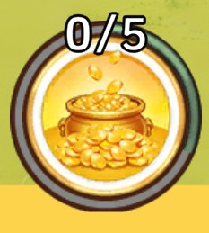
能量随时间上涨，打死动物掉落的能量也会加。攒满一条再点技能，消耗一条。这一局用哪个技能，由准备页选定的角色决定。
| 角色对应的技能 | 效果 |
|---|---|
| 色块人 | 提高自己武器的射速和伤害 |
| 格格 | 身侧生成会自己射击的武器 |
| 大美丽 | 范围内的动物受伤并被定住 |
| 金状元 | 按间隔直接加肉 |
| 亚克东 | 从画面四角放出金币怪，依次跑进场景 |
局内动态随机任务
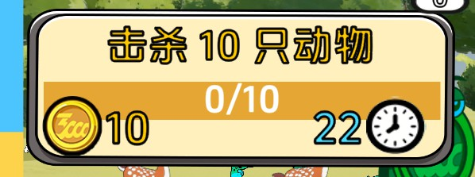
开局过一段时间派出一条，完成或超时后过一段时间再派下一条。
| 任务 | 怎么算完成 |
|---|---|
| 狩猎 | 打死足够数量的动物 |
| 收集 | 收集足够数量的肉 |
| 消耗 | 用了技能或道具 |
幸运仪式
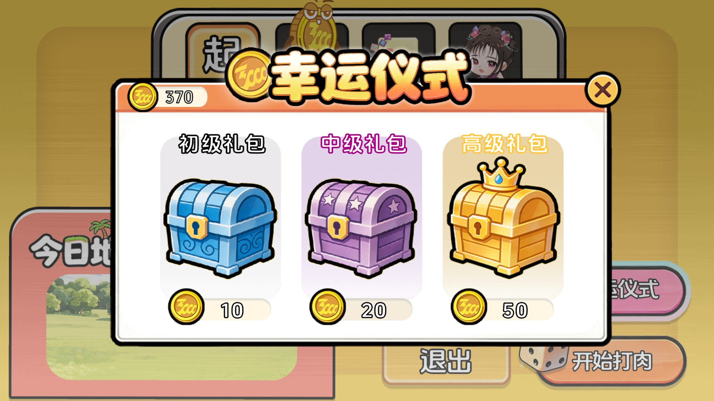
准备页打开。开礼包后得到一条增益，带进随后这一局。
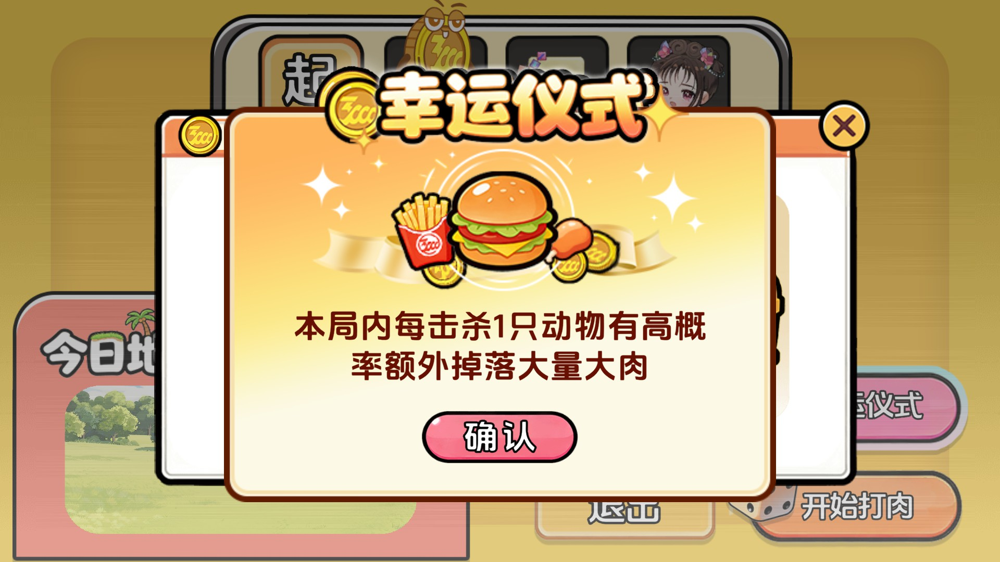
| 增益 | 效果 |
|---|---|
| 更多大肉 | 掉落肉时按概率加量 |
| 开局能量 | 进局时多一段能量 |
| 伤害提升 | 武器和技能的伤害提高 |
| 高阶生成 | 大型动物、弹药怪、金币怪这三类的生成权重乘上配置里的倍数 |
架构
箭头表示调用方向。界面调用这一局，也直接调用运行时。这一局读表、写存档。
模块依赖
flowchart TB
subgraph ui [界面]
prepareUi[准备与弹层]
hud[局内界面]
end
subgraph play [一局]
flow[RoundFlow]
managers[回合管理器]
end
subgraph runtime [运行时]
fw[事件 资源 界面 音频 对象池 特效]
end
subgraph store [数据]
tables[Luban 表]
save[player_save.json]
end
ui --> play
ui --> runtime
play --> runtime
play --> store
运行时
GameFrameworkManager 按顺序建好事件、资源、对象池、界面、音频、特效。HuntingAppFlow 再挂上配置、存档、玩家数据、输入、相机和转场。
资源从 ResourceManager 进。场景换成下一张时走场景管理器，不经过资源加载器。音频分两路：音效占槽位，音乐用三个声部。界面分成页面、抬头、固定、弹层、遮罩，同一种界面同时只开一个。
转场与局状态
每次换阶段都先盖上加载层，卸掉现在这阶段，加载下一阶段，再揭开。
| 去向 | 发生的事 |
|---|---|
| 准备 | 结束正在进行的一局，打开准备页 |
| 主地图 | 关掉准备页，加载森林，预热要用的预制体，开始这一局 |
| 隐藏地图 | 关掉进入提示，卸掉主地图上的动物和子弹，加载雪山 |
一局里只有「进行中」会推动地图规则和管理器。买道具时会暂停。
生成、命中与数值
flowchart LR
control[操作] --> weapon[武器]
weapon --> bullet[子弹]
bullet --> numeric[数值层]
numeric --> health[生命]
health --> states[状态]
生成点算出要生什么，管理器从对象池里取出动物。子弹命中时把已经算好的伤害交给生命，不再算一遍。幸运和一部分技能改的是数值层：伤害、射速、掉落、生成权重、肉、能量、结算。
动物状态
stateDiagram-v2
direction LR
[*] --> 移动
移动 --> 受击: 受伤
受击 --> 移动: 结束
移动 --> 被控: 被定住
被控 --> 移动: 结束
移动 --> 死亡: 生命耗尽
死亡之后先播死亡，再掉落，然后回收。Boss 在出场演出结束前停着，死亡后不走这次回收。
事件
动物、Boss、子弹、能量、肉条、道具、任务、技能、回合、准备、玩家数据，各自有一组事件。界面和管理器订阅这些事件来更新。
主要代码
- 启动、存档与转场 HuntingAppFlow.cs TransitionGate.cs SaveService.cs PlayerDataManager.cs
- 回合与模式 RoundFlow.cs MainMapMode.cs HiddenMapMode.cs
- 肉条、能量与结算 MeatProgressManager.cs EnergyProgressManager.cs SettlementManager.cs
- 动物、生成与武器 BaseAnimalBehaviour.cs BossAnimalBehaviour.cs SpawnerManager.cs PlayerWeapon.cs SkillWeapon.cs
- 操作与子弹 InputManager.cs PlayerControlManager.cs BulletBehavior.cs RoundNumericLayer.cs
- 道具、技能、任务与幸运 PropManager.cs SkillManager.cs QuestManager.cs LuckyBuffManager.cs
- 界面与配表 UIPrepare.cs UIGameplay.cs HuntingConfigManager.cs
事件键在 Assets/Scripts/CoreGameLogic/Events，局内的分在 RoundEvents。表在 Assets/Scripts/GameConfig/gen。可游玩区域和提前量在 Assets/Scripts/Tools。运行时在 Assets/GameFramework。
环境
- Unity 2022.3.7f1c1
- 入口
Assets/Scenes/BootstrapScene.unity - 同目录还有准备、森林、雪山
- 第一次打开会生成
Library。UniTask、YooAsset 2.3.14、Input System、UGUI、Luban 写在Packages/manifest.json